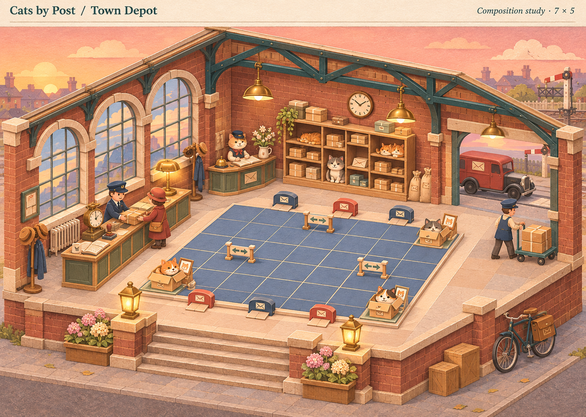
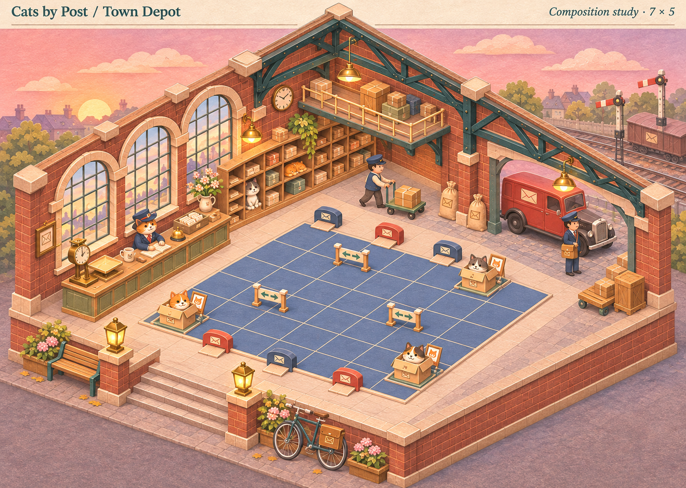
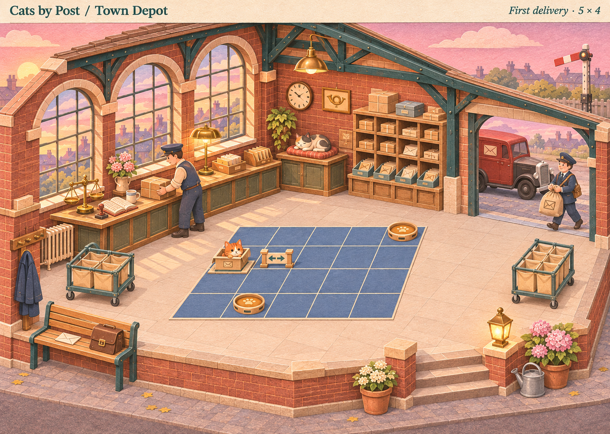

Cats by Post · composition review
Town Depot
Option 2, with a pavement apron, two postal bikes and parcels ready for collection downstairs. Tap the image to open it full size and pinch to zoom.
Option 2 · refined
Pavement wraps around the brick base, with a clear path to the steps. Bikes and parcels sit together beside the collection sign.
 Open full-size image ↗
Open full-size image ↗Compare the original three options
Option 1 · Morning Sorting Hall
Maximum-board composition

Open full-size image ↗Option 2 · Goods Yard Lanterns
Maximum-board composition

Open full-size image ↗Option 3 · Window Workshop
First-delivery composition

Open full-size image ↗